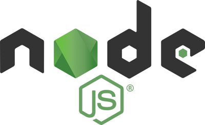

首页 > JavaScript
Node.js是什么？Node.js简介
JavaScript 诞生于 1995 年，几乎是和互联网同时出现；Node.js 诞生于 2009 年，比 JavaScript 晚了 15 年左右。
在 Node.js 之前，JavaScript 只能运行在浏览器中，作为网页脚本使用，为网页添加一些特效，或者和服务器进行通信。有了 Node.js 以后，JavaScript 就可以脱离浏览器，像其它编程语言一样直接在计算机上使用，想干什么就干什么，再也不受浏览器的限制了。
Node.js 不是一门新的编程语言，也不是一个 JavaScript 框架，它是一套 JavaScript 运行环境，用来支持 JavaScript 代码的执行。用编程术语来讲，Node.js 是一个 JavaScript 运行时（Runtime）。
现在的 JavaScript 除了用于 Web 前端编程（网页编程），还能干很多事情，比如：
你看，学会了 JavaScript，你不但是全栈工程师，甚至还将无所不能，这都是 Node.js 带给我们的。
对于 JavaScript 来说，它在运行期间需要依赖以下组件：
JavaScript 的很多功能都需要本地模块的支持，比如：
本地模块一般封装了通用功能，对性能要求较高，所以通常使用编译型语言来实现，比如C语言、C++、汇编语言等。
JavaScript 解释器需要本地模块的支持，标准库在编写时也会调用本地模块的接口，而我们编写的 JavaScript 代码一般不会直接使用本地模块，所以 Web 前端程序员触及不到它们。
本地模块是幕后英雄，它不显山露水，但是又不可或缺。
在 Node.js 之前，JavaScript 运行时被绑定在浏览器中，作为浏览器的各种模块出现。这意味着，要想运行 JavaScript 代码就必须启动浏览器，JavaScript 逃不出浏览器的手掌心，它的功能受到很大的限制，只能作为网页脚本使用。
谷歌公司在 Chrome 浏览器中集成了一种名为“V8”的 JavaScript 引擎（也即 JavaScript 解释器），它能够非常快速地解析和执行 JavaScript 代码。
V8 引擎使用 C++ 语言编写，可以独立运行，也可以嵌入到任何其它 C++ 程序中。谷歌公司将 V8 引擎甚至整个 Chrome 浏览器都开源了，任何人都可以免费地将 V8 应用到自己的项目中。
V8 引擎的强大，以及当年 JavaScript 的火爆，使得一名叫 Ryan Dahl 的程序员动起了“歪心思”，他希望在浏览器之外再为 JavaScript 构建一个运行时，让 JavaScript 能够直接在计算机上运行，这样 JavaScript 就能像 Python、Ruby、PHP 等其它脚本语言一样大展宏图，不必再受限于浏览器，只能做一些小事情。
Ryan Dahl 和他的团队真的做到了，并且做得很好，他们将这套独立的 JavaScript 运行时命名为 Node.js；为了避免被误认为是 JavaScript 框架，现在也经常简称为 Node。
图2：V8 引擎图标
V8 引擎借鉴了 Java 虚拟机和 C++ 编译器的众多技术，它将 JavaScript 代码直接编译成原生机器码，并且使用了缓存机制来提高性能，这使得 JavaScript 的运行速度可以媲美二进制程序。
Node.js 直接在计算机上运行 JavaScript 代码，并且要赋予 JavaScript 强大的能力，所以它的本地模块和浏览器中的运行时有很多大区别，甚至说几乎没有什么关联。Node.js 几乎完全抛弃了浏览器，自己从头构建了一套全新的 JavaScript 运行时。
这套 JavaScript 接口，就是 Node.js 标准库。标准库是否优雅和强大，决定了 Node.js 的易用性，直接影响 Node.js 的市场表现。
当然，并不是所有的本地模块都能找到合适的，Node.js 也自己编写了几个模块，典型的代表就是 Libuv。Libuv 是 Node.js 最核心最基础的模块，Node.js 完全基于 Libuv 而构建。
你可能听说过 Node.js 采用了基于事件的、单线程的异步 I/O 架构，这是 Node.js 最大的特点，也是它和其它脚本语言最大的区别，Node.js 的这种能力就是依赖 Libuv 实现的。
图3：Libuv 图标
最后我们来汇总一下 JavaScript 和 Node.js 的历史：
在 Node.js 之前，JavaScript 只能运行在浏览器中，作为网页脚本使用，为网页添加一些特效，或者和服务器进行通信。有了 Node.js 以后，JavaScript 就可以脱离浏览器，像其它编程语言一样直接在计算机上使用，想干什么就干什么，再也不受浏览器的限制了。
Node.js 不是一门新的编程语言，也不是一个 JavaScript 框架，它是一套 JavaScript 运行环境，用来支持 JavaScript 代码的执行。用编程术语来讲，Node.js 是一个 JavaScript 运行时（Runtime）。

图1：Node.js 图标
图1：Node.js 图标
现在的 JavaScript 除了用于 Web 前端编程（网页编程），还能干很多事情，比如：
- 开发网站后台，这原本是 PHP、Java、Python、Ruby 等编程语言擅长的；
- 开发 GUI 程序，也就是我们常说的带界面的电脑软件，比如 QQ、360、迅雷等；
- 手机 APP，包括 Android APP、iOS APP；
- CLI 工具，也就是不带界面的命令行程序。
你看，学会了 JavaScript，你不但是全栈工程师，甚至还将无所不能，这都是 Node.js 带给我们的。
Node.js 官网中文版：https://nodejs.org/zh-cn/
运行时是什么？
所谓运行时，就是程序在运行期间需要依赖的一系列组件或者工具；把这些工具和组件打包在一起提供给程序员，程序员就能运行自己编写的代码了。对于 JavaScript 来说，它在运行期间需要依赖以下组件：
1) 解释器
JavaScript 是一种脚本语言，需要一边解释一边运行，用到哪些源代码就编译哪些源代码，整个过程由解释器完成。没有解释器的话，JavaScript 只是一堆纯文本文件，不能被计算机识别。2) 标准库
我们在 JavaScript 代码中会调用一些内置函数，这些函数不是我们自己编写的，而是标准库自带的。3) 本地模块
所谓本地模块，就是已经被提前编译好的模块，它们是二进制文件，和可执行文件在内部结构上没有什么区别，只是不能单独运行而已。这些本地模块其实就是动态链接库（在 Windows 下是 .dll 文件），如果你使用过C语言、C++ 等编译型语言，那你应该能够更好地理解它。JavaScript 的很多功能都需要本地模块的支持，比如：
- Cookie 用于存储少量的用户数据，它是用户计算机上的一种小文件，使用 Cookie 必须有文件操作模块的支持。
- Ajax 可以借助互联网从服务器请求数据，这是一种网络操作，必须有网络库的支持。
- 一步一步跟踪代码的执行流程，从中发现逻辑错误，这个过程叫做调试，需要有调试器（Debugger）的支持。
- JavaScript 可以操作 HTML，这需要 HTML 解析模块提前构建起 DOM 树。
本地模块一般封装了通用功能，对性能要求较高，所以通常使用编译型语言来实现，比如C语言、C++、汇编语言等。
JavaScript 解释器需要本地模块的支持，标准库在编写时也会调用本地模块的接口，而我们编写的 JavaScript 代码一般不会直接使用本地模块，所以 Web 前端程序员触及不到它们。
本地模块是幕后英雄，它不显山露水，但是又不可或缺。
总结
解释器、标准库、本地模块等各种组件/工具共同支撑了 JavaScript 代码的运行，它们统称为 JavaScript 运行时。在 Node.js 之前，JavaScript 运行时被绑定在浏览器中，作为浏览器的各种模块出现。这意味着，要想运行 JavaScript 代码就必须启动浏览器，JavaScript 逃不出浏览器的手掌心，它的功能受到很大的限制，只能作为网页脚本使用。
Node.js 的诞生
JavaScript 的一生伴随着浏览器大战。JavaScript 由 Netscape（网景）浏览器发布，但是 Netscape 在和 IE 的竞争中落败，早已不复存在；后来谷歌公司的 Chrome 浏览器异军突起，凭借强悍的性能把 IE 按在地上摩擦。谷歌公司在 Chrome 浏览器中集成了一种名为“V8”的 JavaScript 引擎（也即 JavaScript 解释器），它能够非常快速地解析和执行 JavaScript 代码。
V8 引擎使用 C++ 语言编写，可以独立运行，也可以嵌入到任何其它 C++ 程序中。谷歌公司将 V8 引擎甚至整个 Chrome 浏览器都开源了，任何人都可以免费地将 V8 应用到自己的项目中。
V8 引擎的强大，以及当年 JavaScript 的火爆，使得一名叫 Ryan Dahl 的程序员动起了“歪心思”，他希望在浏览器之外再为 JavaScript 构建一个运行时，让 JavaScript 能够直接在计算机上运行，这样 JavaScript 就能像 Python、Ruby、PHP 等其它脚本语言一样大展宏图，不必再受限于浏览器，只能做一些小事情。
Ryan Dahl 和他的团队真的做到了，并且做得很好，他们将这套独立的 JavaScript 运行时命名为 Node.js；为了避免被误认为是 JavaScript 框架，现在也经常简称为 Node。
图2：V8 引擎图标
V8 引擎官网：https://v8.dev/
Node.js 的组成
Node.js 运行时主要由 V8 引擎、标准库和本地模块组成，尤其是本地模块的多少，从底层决定了 Node.js 功能的强弱。1) V8 引擎
V8 引擎就是 JavaScript 解释器，它负责解析和执行 JavaScript 代码。V8 引擎借鉴了 Java 虚拟机和 C++ 编译器的众多技术，它将 JavaScript 代码直接编译成原生机器码，并且使用了缓存机制来提高性能，这使得 JavaScript 的运行速度可以媲美二进制程序。
2) 本地模块
Node.js 集成了众多高性能的开源库，它们使用 C/C++ 语言实现，比如：| 模块 | 说明 |
|---|---|
| libuv |
一个跨平台的、基于事件驱动的异步 I/O 库。但是 libuv 不仅限于 I/O，它还提供了进程管理、线程池、信号处理、定时器等其它功能。 Linux 中一切皆文件，这里的 I/O 不仅仅包括文件读写，还包括数据库读写、网络通信（socket）等。 |
| nmp | Node.js 包管理器，可以下载包、安装包、卸载包、更新包、上传包等。 |
| http_parser | 一款由C语言编写的轻量级 HTTP 解析器，用以支持 Web 应用开发。 |
| zlib | 工业级的数据压缩/解压模块，Nodejs 借助 zlib 来创建同步、异步或者流式的压缩/解压接口。 |
| OpenSSL | 该模块提供了经过严密测试的许多加密/解密功能，现代 Web 依赖这些功能来实现安全性，比如 SSL 协议和 https 协议。 |
| c-ares | 异步 DNS 查询和解析库。 |
Node.js 直接在计算机上运行 JavaScript 代码，并且要赋予 JavaScript 强大的能力，所以它的本地模块和浏览器中的运行时有很多大区别，甚至说几乎没有什么关联。Node.js 几乎完全抛弃了浏览器，自己从头构建了一套全新的 JavaScript 运行时。
3) 标准库
本地模块使用 C/C++ 编写，而 Node.js 面向 JavaScript 开发人员，所以必须要封装本地模块的 C/C++ 接口，提供一套优雅的 JavaScript 接口给开发人员，并且要保持接口在不同平台（操作系统）上的一致性。这套 JavaScript 接口，就是 Node.js 标准库。标准库是否优雅和强大，决定了 Node.js 的易用性，直接影响 Node.js 的市场表现。
总结
V8 引擎和众多本地模块都是现成的，别人已经造好了轮子，Node.js 的主要工作就是选择合适的模块，将它们集成在一起，并编写好 JavaScript 接口。当然，并不是所有的本地模块都能找到合适的，Node.js 也自己编写了几个模块，典型的代表就是 Libuv。Libuv 是 Node.js 最核心最基础的模块，Node.js 完全基于 Libuv 而构建。
你可能听说过 Node.js 采用了基于事件的、单线程的异步 I/O 架构，这是 Node.js 最大的特点，也是它和其它脚本语言最大的区别，Node.js 的这种能力就是依赖 Libuv 实现的。
Libuv 如此强大，官方决定将它从 Node.js 中剥离出来，作为一个单独的网络库发布，并且开源免费。现在的 Libuv 已经变得非常流行，和传统的 Libevent 和 libev 库并称为“C/C++ 三大网络库”。
Node.js 之所以大名鼎鼎，主要是因为它采用了 V8 引擎和 Libuv 库：V8 引擎保证了 Node.js 运行高效，Libuv 库提供了基于事件循环的异步 I/O 能力。图3：Libuv 图标
Libuv 官网：http://libuv.org/
总结
Node.js 是一个 JavaScript 运行时，它让 JavaScript 脱离了浏览器环境，可以直接在计算机上运行，极大地拓展了 JavaScript 用途。我们应该将 JavaScript 和 Python、Java、Ruby 等其它编程语言同等对待，不能再将它视为一种“小玩意”。最后我们来汇总一下 JavaScript 和 Node.js 的历史：
- Netscape 浏览器衍生出了 JavaScript 脚本，赋予网页编程能力；
- Chrome 浏览器衍生了 V8 引擎，提高了 JavaScript 性能；
- V8 引擎构建了 Node.js，拓展了 JavaScript 的编程能力；
- Node.js 衍生了 Libuv 库，给网络开发增加了一款优秀的工具。
关注公众号「站长严长生」，在手机上阅读所有教程，随时随地都能学习。内含一款搜索神器，免费下载全网书籍和视频。

微信扫码关注公众号